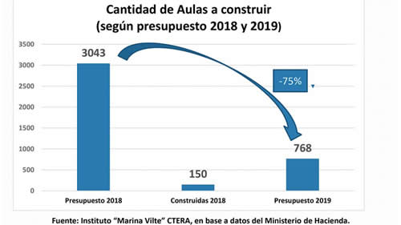

Real Chubut - Agencia de Noticias


El cuento de los tres mil jardines de infantes

Fue una de las promesas de Macri en educación. Luego la reformularon y hablaron de 10 mil aulas. Pero después Cambiemos recortó fondos en 2018 y 2019.
De todas las promesas de campaña de Mauricio Macri para mejorar la educación, la de construir tres mil jardines de infantes durante su mandato es la que mejor muestra su verdadero interés en el tema. Ya en el primer año de gobierno el compromiso presidencial se desinfló. En 2017 el ministro de Educación debió reformular el plan y de los 3 mil jardines iniciales pasó a hablar de sólo 10 mil aulas. Luego Cambiemos recortó los fondos del Presupuesto Nacional destinados a levantar jardines y aulas de nivel inicial, en 2018 y 2019. Y en los hechos, ni siquiera esos fondos son utilizados. No sólo no se construyeron los jardines prometidos: incluso muchos que habían sido comenzados quedaron abandonados a medio hacer.
Un relevamiento del Instituto Marina Vilte, de Ctera, denunció en este sentido que en 2018 sólo se construyeron 150 de las 3043 aulas previstas. El informe señala la subejecución de fondos cuyo uso ya estaba aprobado por el Congreso Nacional para la construcción de las aulas y jardines. Se trata de dinero que no fue utilizado a pesar de que estaba disponible y del que el gobierno nunca aclaró cuál fue su destino.
El análisis realizado por el Instituto asegura que:
- En 2017, de un presupuesto para construcción de jardines o aulas de $ 5.602 millones, sólo se ejecutaron $ 1.841 millones, es decir, el 32,9 por ciento de lo presupuestado.
- En 2018, el presupuesto fue de $ 6.063 millones y se ejecutaron $ 2.049 millones, es decir el 33 por ciento.
- En los dos últimos años se subejecutaron entonces partidas por $ 7.775 millones. Con ellas ya se hubieran construido 540 jardines o 3.000 aulas.
- Para este año el panorama puede empeorar, ya que el Presupuesto 2019 prevé la construcción de una cantidad de aulas 75 por ciento inferior a la programada para 2018.
Una consecuencia de estos incumplimientos es que muchos jardines de infantes fueron iniciados y luego abandonados sin terminar. Uno de los casos constatado por los medios locales es el jardín de infantes Nº 908 de Chascomús, a medio construir. En el sur de Santa Fe hay siete jardines en esta misma situación. El Nº 221 de Santo Tomé quedó construido en un 50 por ciento; otros, como el Santa Rosa de Lima sólo tiene los cimientos. Las empresas a cargo aducen que con un 50 por ciento de inflación sus costos no fueron readecuados. En Chajarí, Entre Ríos, el municipio tuvo que hacerse cargo de pagar el pasaje de vuelta a los trabajadores de la construcción que habían sido llevados para las obras por una empresa privada.
La promesa de los 3 mil jardines fue formulada por Macri en el debate de los candidatos presidenciales. "Me comprometo a construir los 3.000 jardines de infantes que faltan. La mayoría están en la provincia de Buenos Aires (900) para que tengan sala de 3, 4 y 5. Estamos hablando de 683.000 niños que no tienen hoy igualdad de oportunidades", dijo en aquel 2015. Ya electo, en mayo de 2016, viajó al pequeño pueblo de Ingeniero Luiggi, provincia de La Pampa, para el lanzamiento del plan. "Está comprobado en el mundo que los chicos que tienen la posibilidad de ir a un jardín de infantes tienen más posibilidades de terminar el secundario y eso es justicia social, equidad y por eso trabajaremos en éste sentido, porque hoy en la Argentina hay 600.000 niños que no tienen acceso a un jardín de infantes de tres años, por eso queremos construir 3.000, de los cuales 150 construiremos éste año y cuatro estarán destinados a La Pampa", aseguró el bonito discurso presidencial. Aunque pueda parecer increíble, también el jardín de Ingeniero Luiggi quedó a medio hacer.
En julio de 2017 el ministro de Educación, Alejandro Finocchiaro, había anunciado una "reconversión" del programa inicial. El funcionario adujo que el plan original contemplaba determinados requisitos en relación a los terrenos sumamente difíciles de alcanzar para las jurisdicciones provinciales. Y que en segundo lugar, implicaba un gasto corriente muy grande para las jurisdicciones, es decir en salarios. "Lo que estamos pensando ahora es en la construcción de 10.000 aulas o salas. Es decir, en los lugares donde ya tenemos jardines de infantes, el objetivo ahora es ampliar su capacidad edilicia", rectificó entonces.
¿Cuántos de los jardines prometidos se construyeron realmente? se preguntan los investigadores del Marina Vilte. Responden que "no hay precisión al respecto, dado que el gobierno sólo divulgó información parcial y contradictoria". Según las "metas físicas" que mide el Ministerio de Hacienda, en 2017 se construyeron 42 jardines, aunque la información sobre dónde están ubicados no fue dada a conocer. En cambio, según el Sistema de Seguimiento Físico-Financiero de Proyectos de Inversión del mismo Ministerio de Hacienda, sólo se terminaron 3 jardines en la provincia de Córdoba (en las ciudades de Alta Gracia, Malvinas Argentinas y Río Ceballos) de acuerdo a los últimos datos publicados, que corresponden al tercer trimestre de 2018.
Fuente: Pagina 12